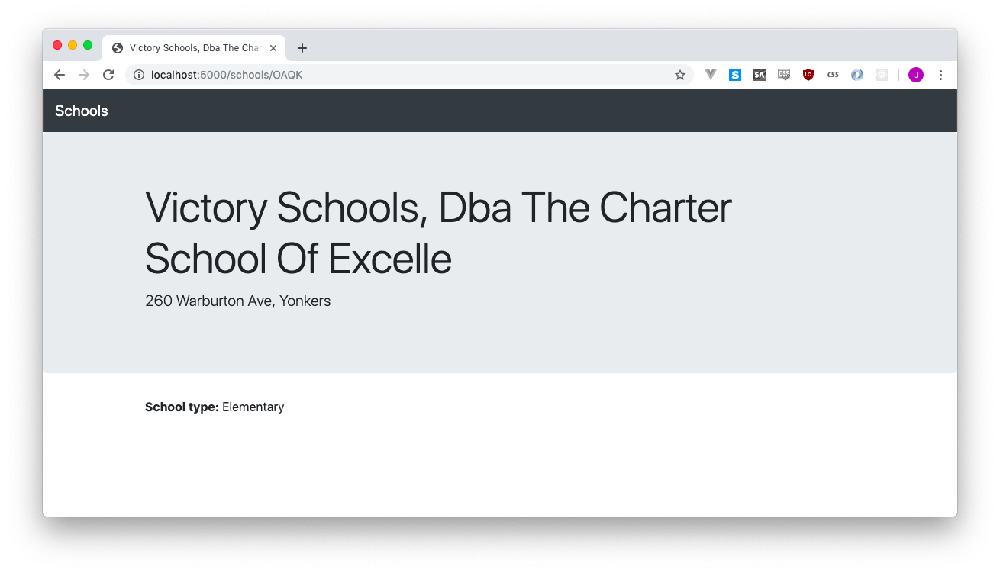

7 Layouts for our templates
Now that we have a handful of templates - list.html, detail.html, cities.html, and maybe some more if you did the zipcodes thing - we’re going to want to get a little more organized.
I’ve been thinking about adding some links to the navigation up at the top of the page so visitors can browse between different pages. One link for the cities page, one for the ZIP codes page, one for the home page, etc etc etc.
The problem is that I’m lazy, and there’s at least three different pages to edit. As our site grows and grows, we’re going to have more templates and mote things to edit and I don’t want to edit seventeen HTML pages every time I want to make one change to the header or footer.
7.1 Layouts
Layouts are separate HTML pages that might have a header and a footer, but nothing in the middle. When we use our template, we say “hey! go find that layout, and wrap me in its warm embrace.” And thus our template automatically gets the header and footer!
Let’s try a test with one of our schools. First, edit detail.html to remove everything outside of the bits that are about the school (or will eventually be about the school). It should look like this:
<div class="jumbotron">
<div class="container">
<h1 class="display-4">{{ school.SCHOOLNAME.title() }}</h1>
<p class="lead">{{ school.ADDRESS.title() }}, {{ school.city.title() }}</p>
</div>
</div>
<div class="container">
<p></p>
<p></p>
<p></p>
</div>If you visit http://localhost:5000/schools/X068 now, you’ll be horrified. All of our hard work!
But let’s go and make a new file in the same templates folder called layout.html.
<!doctype html>
<html>
<head>
<title>My incredible web site.</title>
<link rel="stylesheet" href="https://stackpath.bootstrapcdn.com/bootstrap/4.3.1/css/bootstrap.min.css" crossorigin="anonymous">
</head>
<body>
<nav class="navbar navbar-expand-lg navbar-dark bg-dark">
<a class="navbar-brand" href="#">Schools</a>
</nav>
{% block content %}{% endblock %}
</div>
</body>
</html>It’s everything from our previous page we got rid of, but with the addition of {% block content %}{% endblock %}. That little piece means “if you have a chunk of code you call content, I’ll put it here.”
Refresh http://localhost:5000/schools/X068, note that nothing’s changed, and realize we need to
- Tell our
detail.htmlto call the layout - Identify the parts of
detail.htmlthat should be thecontent
To tell the template to use a layout, you put a {% extends "layout.html" %} up top. Then you use that weird {% block... thing again to identify where the content is.
Our updated detail.html will look like this:
{% extends 'layout.html' %}
{% block content %}
<div class="jumbotron">
<div class="container">
<h1 class="display-4">{{ school.SCHOOLNAME.title() }}</h1>
<p class="lead">{{ school.ADDRESS.title() }}, {{ school.city.title() }}</p>
</div>
</div>
<div class="container">
<p></p>
<p></p>
<p></p>
</div>
{% endblock %}Pretty fun, right? Amazingly fun? Incredibly fun? And it gets even better!
Every single one of our pages has that “jumbotron” thing in it, with the big text and the small text. Sometimes it’s a title like “Cities” or sometimes “P.S. 068 Bronx” or sometimes the count of the schools in a zip code.
What happens if we wanted to change the style of our big headers, and replace the jumbotron with something a little more elegant? Well, we’d have to go through and edit every one of those pages with the new style, which wouldn’t be fun at all.
With our current template, we called everything on the page content, which then filled in the content section of layout.html. But it doesn’t have to be that way! What if we had more sections, things like headline and subhead and anything else we could think of?
Your detail.html might look like this, with headline and subhead sections:
{% extends 'layout.html' %}
{% block headline %}
{{ school.SCHOOLNAME.title() }}
{% endblock %}
{% block subhead %}
{{ school.ADDRESS.title() }}, {{ school.city.title() }}
{% endblock %}
{% block content %}
<div class="container">
<p><strong>School type:</strong> {{ school.SCH_TYPE }}</p>
<p></p>
<p></p>
</div>
{% endblock %}Which then get imported into our layout.html:
<!doctype html>
<html>
<head>
<title>My incredible web site.</title>
<link rel="stylesheet" href="https://stackpath.bootstrapcdn.com/bootstrap/4.3.1/css/bootstrap.min.css" crossorigin="anonymous">
</head>
<body>
<nav class="navbar navbar-expand-lg navbar-dark bg-dark">
<a class="navbar-brand" href="#">Schools</a>
</nav>
<div class="jumbotron">
<div class="container">
<h1 class="display-4">{% block headline %}{% endblock %}</h1>
<p class="lead">{% block subhead %}{% endblock %}</p>
</div>
</div>
{% block content %}{% endblock %}
</div>
</body>
</html>I added the school type just so we could be sure that content was filled in.
Now we can go through each of our other pages and do the same thing, using the layout and breaking the content into headline, subhead and content sections.
Our list.html file gets chunked up like this:
{% extends 'layout.html' %}
{% block headline %}
There are {{ "{:,}".format(count) }} schools in {{ location.title() }}
{% endblock %}
{% block subhead %}
It's pretty cool.
{% endblock %}
{% block content %}
<div class="container">
<p>I'm amazed and frankly you should be, too.</p>
{% for school in schools %}
<p><a href="/schools/{{ school.LOC_CODE }}">{{ school.SCHOOLNAME }}</a></p>
{% endfor %}
</div>
{% endblock %}And in city.html we don’t have a subhead, so we can go ahead and completely ignore it:
{% extends 'layout.html' %}
{% block headline %}
Cities
{% endblock %}
{% block content %}
<div class="container">
{% for city in cities %}
<p><a href="/city/{{ city.lower().replace(' ', '-') }}">{{ city.title() }}</a></p>
{% endfor %}
</div>
{% endblock %}7.1.1 And a final fun trick
If you pay attention to the top of your browser, the title of the page, you’ll notice it’s always the same - “My incredible web site.” That’s both useless and narcissistic, so it’d be great to change it.
A benefit of having moved to a template with variables for things like the header, subhead and content, is that we can re-use the headline in both the jumbotron and* the title of the page.
Unfortunately, Jinja2 is really weird, so we can’t just use the {% block... syntax again. Instead, we do this:
<head>
<title>{{ self.headline() }}</title>
<link rel="stylesheet" href="https://stackpath.bootstrapcdn.com/bootstrap/4.3.1/css/bootstrap.min.css" crossorigin="anonymous">
</head>If self.headline() gets the headline, why don’t we use that all the time instead of the werid {% block... syntax? I have no idea, I just follow directions.
Visit a few different pages and rejoice! Titles galore.
